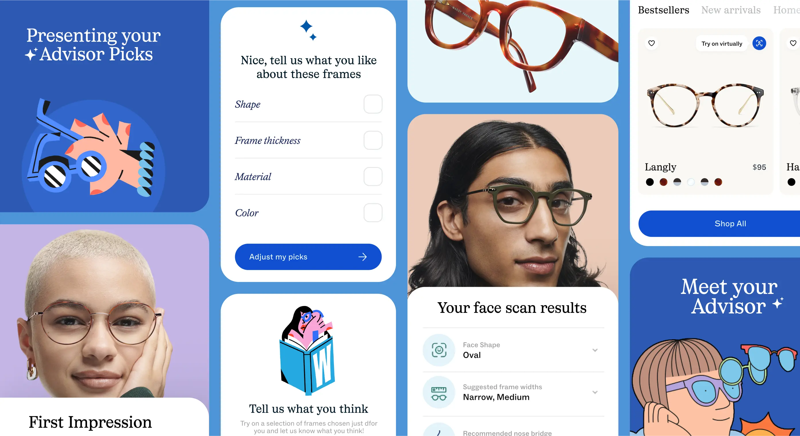

Crafting clarity in the customer journey from browse to buy—helping people feel confident choosing glasses online.

Buying glasses online is weird. You're making a decision about something that sits on your face every day, and you can't try it on. Warby Parker pioneered home try-on to solve this, but the digital experience still needed to build confidence at every step.
The content challenge: reduce uncertainty without overwhelming people with information. Help them feel smart about a purchase they might be nervous about.
"Every piece of copy needed to answer an unasked question—before the customer even knew they had it."
I partnered with product designers to map the emotional journey of buying glasses online. Where did people hesitate? What made them abandon carts? What questions did customer service answer most often?
We identified key moments of uncertainty and designed content interventions:
The prescription upload flow was a major friction point. People weren't sure if their prescription was valid, formatted correctly, or if they even needed one for the frames they wanted. We rewrote the entire flow to feel like a helpful conversation rather than a form.
The updated content reduced support tickets related to prescription questions and improved completion rates on the checkout flow. More importantly, customer feedback shifted—people described the experience as "easy" and "reassuring."
This project taught me that confidence is content's job. It's not just about being clear—it's about making people feel capable. The best UX writing doesn't just inform; it reassures.